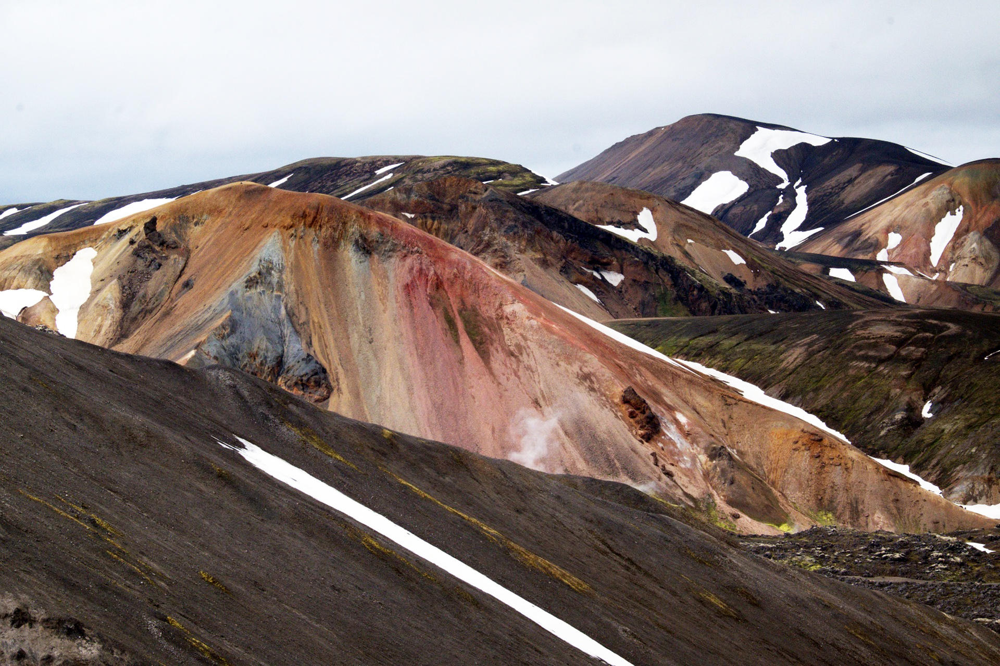
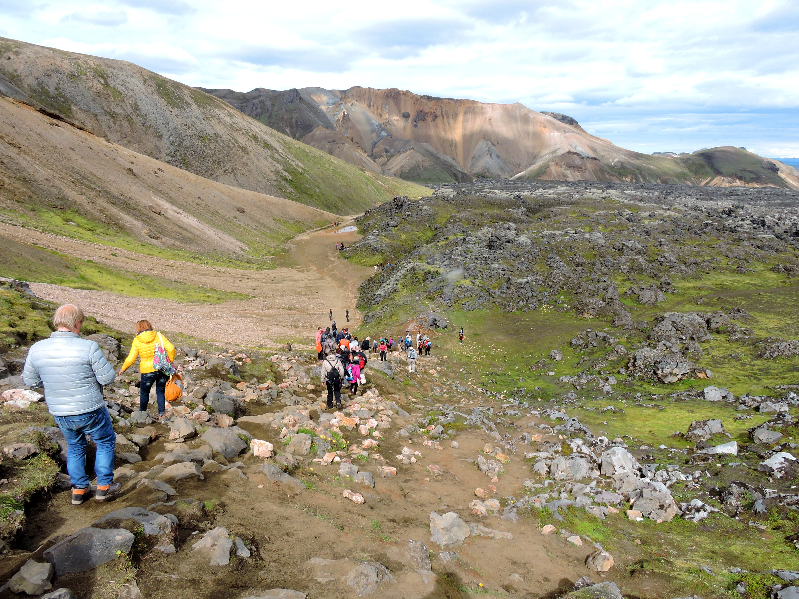
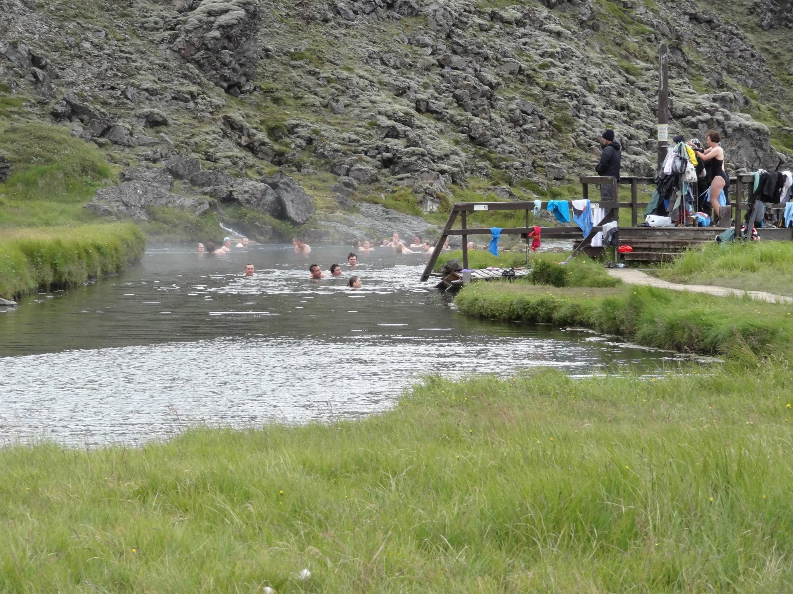

¿Qué es Landmannalaugar?
Landmannalaugar es un paraje natural que se oculta en la parte meridional de las tierras altas de Islandia. Este paraje es famoso por ser un área que contiene una actividad geotérmica intensa, montañas de colores y sus aguas termales.
Las montañas presentan una gran diversidad de colores que puede variar entre el rosa, verde, marrón y dorado. Estos colores se producen por el resultado de los depósitos de minerales sobre rocas volcánicas. De hecho, uno de los elementos más conocidos de este paraje es el campo de Lava de Laughraun, que se formó en 1477 tras una erupción volcanica que formó el valle. El campo de lava pasa cerca de los baños termales, que se encuentran a lo largo del río Laugahraun.

Actividades
Landmannalaugar nos ofrece una amplia variedad de actividades para los visitantes, destacando el senderismo, la exploración geológica y sus aguas termales naturales.
Senderismo
El senderismo en Landmannalaugar es de los mejores que se puede encontrar en Islandia. En él, se pueden encontrar varias rutas que contienen paisajes impresionantes y diferentes dificultades para todos los niveles.

Aguas Termales
Las aguas termales se encuentran escondidas al lado del campo de lava de Laugahraun y son una de las principales atracciones del paraje. Las aguas contienen una mezcla de agua caliente que viene de respiraderos geotermales y agua fría que viene de arroyos de la montaña, lo que hace que la temperatura sea perfecta para relajarse después de una larga caminata. Además, tienen unas vistas impresionantes del paisaje que lo rodea, lo que hace que la experiencia sea aún más especial.

Como visitar Landmannalaugar
Para visitar Landmannalaugar es necesario conducir un vehículo 4x4 por las carreteras F, ya que este se encuentra en la zona profunda de la reserva natural Fjallabak de Islandia. Para ir, previamente se tiene que revisar cómo está el temporal y qué rutas están abiertas, ya que dependiendo de estos factores, se pueden encontrar cerradas. Por ejemplo, las ruta F208 y F225 solo se abren en verano.
Asimismo, es posible acceder al área en invierno, pero es mucho mas problematico, ya que las rutas y carreteras se vuelven más peligrosas y requieren un equipo más específico para reducir el riesgo. Por ello, se recomienda ir en verano cuando es más fácil acceder.
Ubicación
¿Porque deberias visitarlo?
Landmannalaugar es un destino de pura belleza natural, con paisajes únicos y una gran variedad de actividades para disfrutar. Sus montañas multicolor, sus aguas termales y sus extensos elementos naturales crean un entorno único que no se puede encontrar en otros lugares del mundo.
Además de esta belleza natural, el lugar ofrece múltiples experiencias inolvidables, desde las rutas de senderismo bien establecidas por paisajes volcánicos hasta la posibilidad de relajarse en aguas termales naturales rodeadas de montañas.
Por ello, es un destino ideal para desconectar y poder disfrutar de la naturaleza, la fotografía y actividades al aire libre como el senderismo, que pueden convertirse en recuerdos inolvidables.